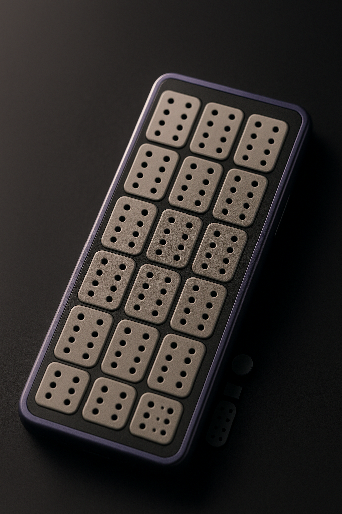
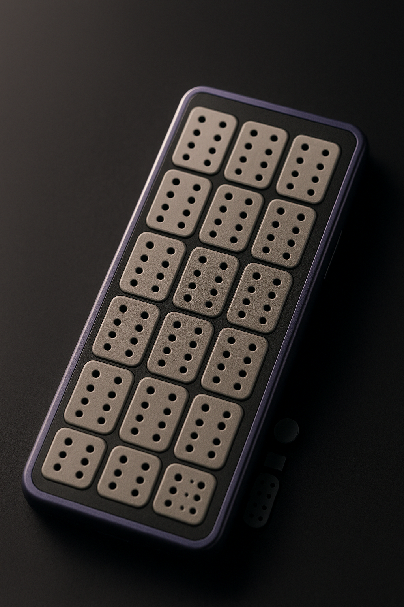

Smartphone khusus buta-tuli
Posted on September 24, 2025
 

Penderita buta-tuli memiliki kesusahan dalam melakukan komunikasi maupun mendapat informasi yang dikarenakan oleh matinya indra penglihatan dan pendengaran mereka, oleh karena itu kami berinovasi sebuah piranti smartphone yang dapat membantu penderita buta-tuli untuk menggunakan perangkat smartphone yang mampu mereka gunakan
sebelum saya lanjut, saya ingin menjelaskan tentang apa itu kode braille, braille merupakan sistem tulisan dan cetakan taktil (berbasis sentuhan) untuk penyandang tunanetra atau orang dengan gangguan penglihatan, yang terdiri dari kombinasi titik-titik timbul pada kertas untuk mewakili huruf, angka, tanda baca, notasi musik, dan simbol lainnya
Nah, HP ini menggunakan 28 buah kode braille yang disusun menjadi 4x7 grid yang berfungsi seolah sebagai screen bagi pengguna buta-tuli, kode braille ini tersebut tidak cuman sebagai medium pembaca, melainkan setiap titik dapat di klik seperti pulpen oleh pengguna agar mereka pula bisa membuat pesan atau aktivitas lainnya di HP tersebut.
tombol yang berada di samping kanan dari atas yaitu tombol power, lalu dibawahnya merupakan dua tombol spesial yang memiliki fungsi berbeda-beda tergantung aplikasi yang digunakan, lalu yang terakhir adalah indikator braille spesial yang berfungsi sebagai indikator tentang mode apa yang sedang digunakan.
HP ini memiliki bagian getaran yang dimana setiap tombol atau perintah akan memberi pola getaran yang unik agar pengguna bisa mengetahui apa yang HP ini sedang lakukan.